- Introduction
- Newton's Equations of Motion
- Kalman Filter Algorithm
- Tracking a Dog
- Predict Step
- Update Step
- Implementing the Kalman Filter
- The Kalman Filter Equations
- Exercise: Show Effect of Hidden Variables
Multivariate Kalman Filters
충북대학교 지능로봇공학과 문성태 교수
Contents
- How Velocity is Calculated
- Adjusting the Filter
- A Detailed Examination of the Covariance Matrix
- Question: Explain Ellipse Differences
- Filter Initialization
- Batch Processing
- Smoothing the Results
- Exercise: Compare Velocities
- Discussion and Summary
Introduction
- 다변량 Kalman filter: 상태를 다변량 Gaussian 으로 표현, 평균은 벡터, 공분산은 행렬
- 상관관계: 위치와 속도를 대략만 알아도 서로 상관되어 있으면 posterior 가 매우 정확
- 대상: Newton 운동 방정식으로 기술되는 시스템으로 한정
- 명칭: discretized continuous-time kinematic filter
핵심: 위치만 측정해도 상관된 속도까지 함께 좁혀지는 것이 다변량 필터의 이점
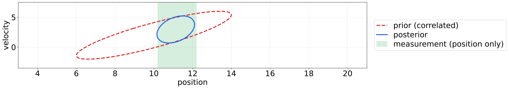
Newton's Equations of Motion
- 예: 위치 13 m 에서 속도 10 m/s 로 12 s 이동하면 m
- 설계 출발점: 시스템 동역학의 미분방정식, Newton 방정식은 적분해 닫힌 해를 얻을 수 있어 설계가 쉬움
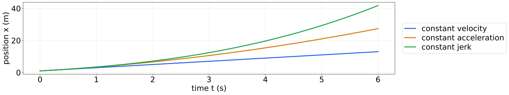
Kalman Filter Algorithm
Initialization
- 필터 상태 초기화
- 상태에 대한 믿음 초기화
Predict
- process model 로 다음 시점 상태 예측
- 예측 불확실성을 반영해 믿음 조정
Update
- 측정과 그 정확도 획득
- 추정 상태와 측정의 residual 계산
- 측정과 예측 중 더 정확한 쪽으로 비율 계산
- 그 비율로 예측과 측정 사이에 상태 설정
- 측정 확실성에 따라 믿음 갱신

Predict Equations
| Univariate | Univariate (Kalman form) | Multivariate | |
|---|---|---|---|
| Mean | |||
| Covariance |
- : 상태 평균과 공분산, 1 차원의 x 와 에 대응
- : 상태 전이 함수, x 에 곱하면 prior 계산
- : process 공분산, 에 대응
- : 제어 입력 모델과 제어 입력, 새로 등장하는 항
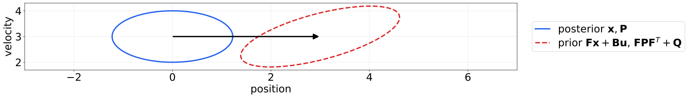
Update Equations
| Univariate | Univariate (Kalman form) | Multivariate | |
|---|---|---|---|
| Residual | |||
| Gain | |||
| Mean | |||
| Covariance |
- : 측정 함수, 상태를 측정으로 변환, H 를 지우고 보면 1 차원 식과 같은 모양
- , : 측정 평균과 잡음 공분산, residual 과 Kalman gain
설계자의 일: 상태 (x, P), process (F, Q), 측정 (z, R), 측정 함수 H, 제어가 있으면 B, u
Tracking a Dog
- 상황: 복도를 걷는 개, 매 단계 약 1 m 전진, 속도는 process 분산만큼 변동
- 센서: 위치만 측정, 측정 분산 z_var 의 잡음
- 추정: 측정하지 않는 속도까지 hidden variable 로 함께 추정
- 계산: 다변량 Gaussian 의 곱과 합, 아이디어는 1 차원 필터와 동일
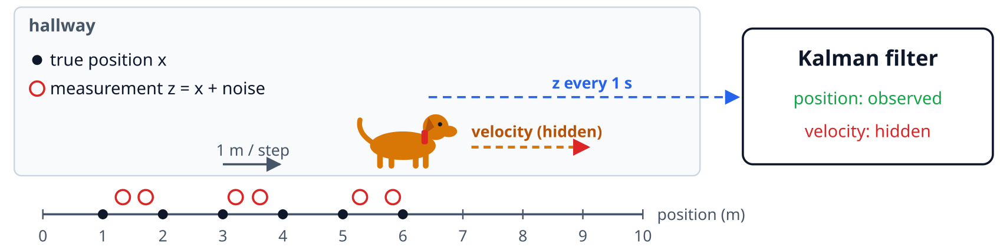
Simulating the Dog
- count 단계 동안 개를 약 1 m 씩 전진시키며 실제 위치와 잡음 섞인 측정을 함께 생성
- 그래프에서 검은 점선은 실제 경로(track), 원은 측정, 측정이 실제 경로 주위로 흩어짐
- 조건: z_var = 10 (측정 분산), process_var = 0.01 (속도 변동), 50 단계, dt = 1 s
def compute_dog_data(z_var, process_var, count=1, dt=1.): "returns track, measurements 1D ndarrays" x, vel = 0., 1. z_std = math.sqrt(z_var) p_std = math.sqrt(process_var) xs, zs = [], [] for _ in range(count): v = vel + (randn() * p_std) x += v*dt xs.append(x) zs.append(x + randn() * z_std) return np.array(xs), np.array(zs) track, zs = compute_dog_data(z_var=10, process_var=0.01, count=50) plt.plot(track, 'k--', label='Track') plots.plot_measurements(zs) plt.legend(loc=4);
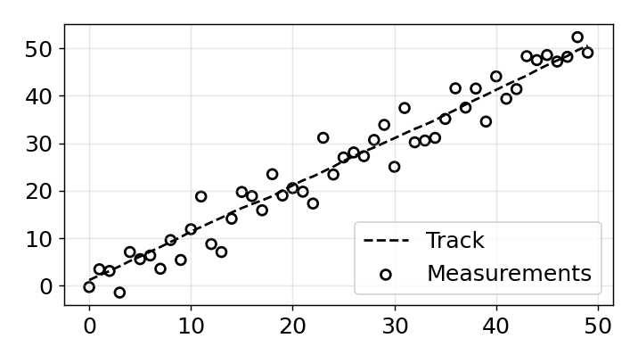
Designing the Filter
State
Process
Control
Measurement
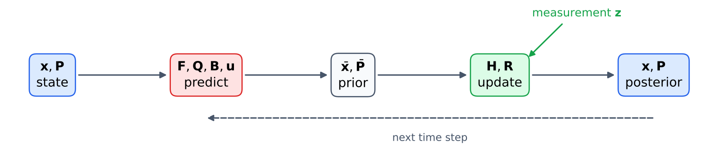
Design State Variable
- 상태 변수: 1 차원의 평균 위치 대신 위치와 속도를 담은 n x 1 벡터, 다변량 Gaussian 의 평균
- observed: 센서가 직접 측정하는 변수, 위치
- hidden: 관측 변수로부터 추론하는 변수, 속도
- 설계 선택: 가속도, jerk 도 상태로 둘 수 있음, y 축 추적도 이름은 x
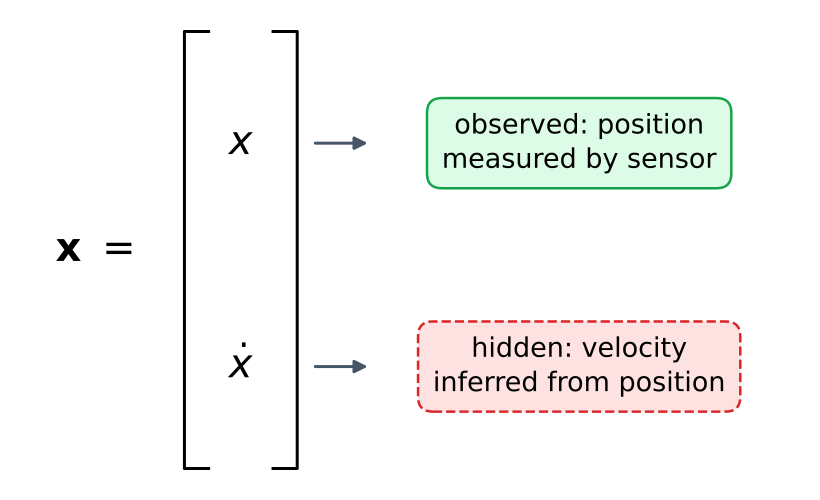
State Vector in NumPy
- 위치 10 m, 속도 4.5 m/s 의 상태를 열 벡터, 전치, 1 차원 배열의 세 방식으로 생성
- 행렬 곱 np.dot 과 @ 연산자의 결과 비교, 1 차원 배열과 곱하면 1 차원 배열 반환
- 조건: x = [10.0, 4.5], A = [[1, 2], [3, 4]], 정수와 실수가 섞이면 float 배열
x = np.array([[10.0], [4.5]]) print(x) x = np.array([[10., 4.5]]).T print(x) x = np.array([10.0, 4.5]) print(x) print(np.array([1., 0, 0, 0, 0, 0])) A = np.array([[1, 2], [3, 4]]) x = np.array([[10.0], [4.5]]) print(np.dot(A, x)) # matrix multiply print(A @ x) # alternative matrix multiply x = np.array([10.0, 4.5]) print(A @ x)
[[10. ]
[ 4.5]]
[[10. ]
[ 4.5]]
[10. 4.5]
[1. 0. 0. 0. 0. 0.]
[[19.]
[48.]]
[[19.]
[48.]]
[19. 48.]
Design State Covariance
- 초기값: 초기 P 만 지정, 이후 매 epoch 필터가 갱신
- 위치: 초기 위치를 거의 모르면 500 m^2 처럼 큰 분산
- 속도: 개의 최고 속도 약 21 m/s 를 3 sigma 로 둠
- 공분산: 개의 위치와 속도 상관은 알 수 없으므로 0, 필터가 계산
- 코드: P = np.diag([500., 49.]) 로 대각 행렬 생성
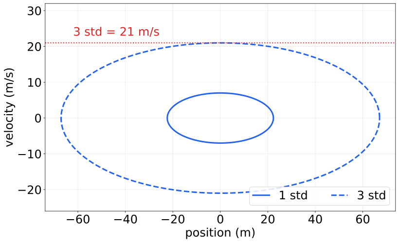
Design the Process Model
- process model: 시스템 거동의 수학 모델, 이산 시간 단계 뒤의 상태 예측
- 일반화: Newton 시스템뿐 아니라 밸브 설정으로 정해지는 배관 유량 같은 임의의 선형 시스템
- 속도: 속도 변화 모델이 없으므로 한 단계 동안 일정하다고 가정
- : 상태 변수마다 식 하나, F 는 state transition matrix
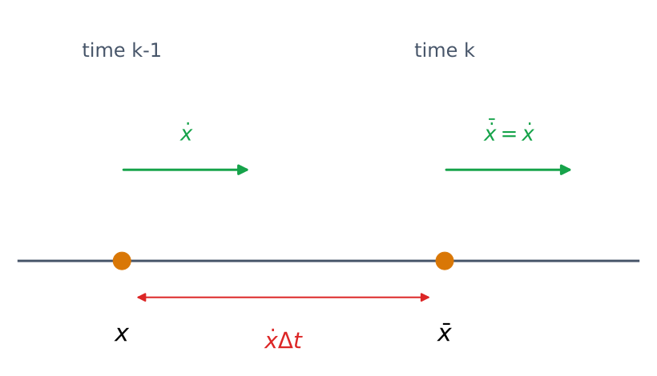
Predicting with F
- 위치 10 m, 속도 4.5 m/s 의 상태에 F 를 곱하는 예측을 측정 없이 5 번 반복
- 첫 예측 위치는 10.45 m, 속도는 그대로 유지, 이후 매번 0.45 m 씩 증가
- 5 번 예측 후 P 는 위치 분산이 커지고 비대각 성분이 0 이 아님, 위치와 속도의 상관 생성
- 조건: dt = 0.1 s, P = diag(500, 49), Q = 0, x = Fx, P = FPF^T
dt = 0.1 F = np.array([[1, dt], [0, 1]]) x = np.array([10.0, 4.5]) P = np.diag([500, 49]) for _ in range(5): x = np.dot(F, x) # Q is zero P = np.dot(F, P).dot(F.T) print('x =', x) print(P)
x = [10.45 4.5 ]
x = [10.9 4.5]
x = [11.35 4.5 ]
x = [11.8 4.5]
x = [12.25 4.5 ]
[[512.25 24.5 ]
[ 24.5 49. ]]
Covariance Before and After
- 초기 공분산(빨간 실선)과 한 번 예측한 prior(검은 점선)의 공분산 타원 비교
- 위치 변화로 타원 중심이 10 에서 11.35 로 이동, 타원이 늘어나며 기울어짐
- Q = 0 이므로 잡음 때문이 아님, 예측 단계에서 정보가 줄어드는 효과
- 조건: dt = 0.3 s, P = diag(500, 500), x = [10.0, 4.5]
dt = 0.3 F = np.array([[1, dt], [0, 1]]) x = np.array([10.0, 4.5]) P = np.diag([500, 500]) plot_covariance_ellipse(x, P, edgecolor='r') x = np.dot(F, x) P = np.dot(F, P).dot(F.T) plot_covariance_ellipse(x, P, edgecolor='k', ls='dashed') plots.set_labels(x='position', y='velocity')
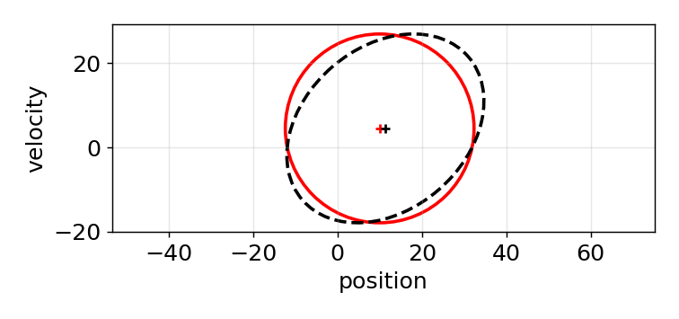
Design Process Noise
- 외란: cruise control 의 불완전성, 바람, 언덕, 노면 구멍, 창문 개방에 따른 항력 변화
- f(x), w: f 는 상태 전이, w 는 white process noise
- white noise: 평균 0 이므로 x 에는 더하지 않고 공분산 P 에만 Q 를 더함
- 예: dt = 1 s, 분산 2.35 의 white noise 를 이산화
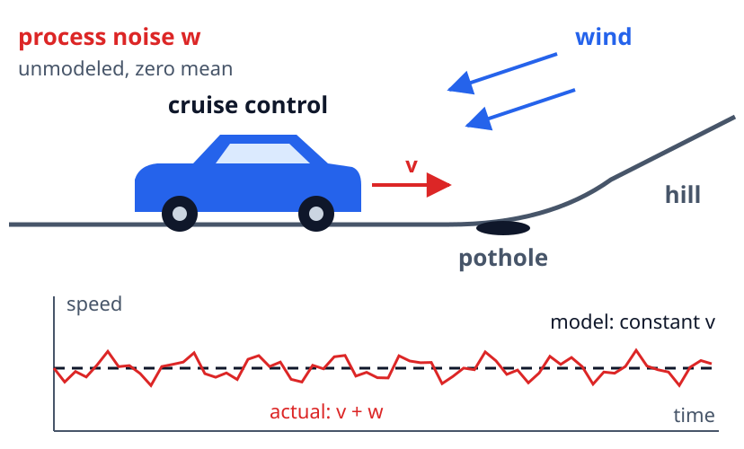
Design the Control Function
- 제어 입력: 로봇에 매 단계 보내는 조향과 속도 명령, 현재 위치와 목표 위치로 결정
- : 제어 입력, 예: 바퀴 모터 속도를 정하는 전압
- : 제어 입력 모델, u 로 인한 상태 변화량 계산
- 개: 제어 입력이 없으므로 B = 0, u = 0
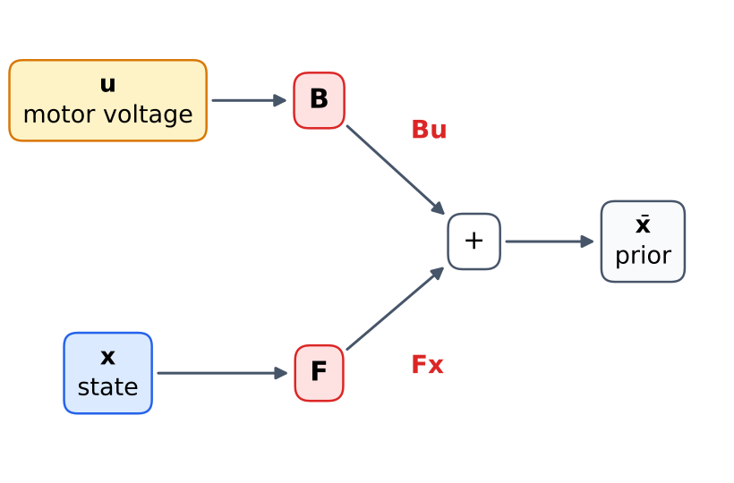
Prediction with Q, B, u
- 한 번 예측한 상태(빨간 실선)에 Q 를 더하고 B = 0, u = 0 으로 다시 예측(검은 점선)
- 평균은 Fx + Bu 로 12.7 m, 공분산은 FPF^T + Q 로 커지고 더 기울어짐
- 조건: dt = 0.3 s, Q 는 dt = 1, 분산 2.35 의 white noise, B = 0, u = 0
dt = 0.3 F = np.array([[1, dt], [0, 1]]) x = np.array([10.0, 4.5]) P = np.diag([500., 500.]) x, P = np.dot(F, x), np.dot(F, P).dot(F.T) # Q = 0 plot_covariance_ellipse(x, P, edgecolor='r') Q = Q_discrete_white_noise(dim=2, dt=1., var=2.35) B = 0. # my dog doesn't listen to me! u = 0 x = np.dot(F, x) + B*u P = np.dot(F, P).dot(F.T) + Q plot_covariance_ellipse(x, P, edgecolor='k', ls='dashed') print('x =', x) print('P =', P)
x = [12.7 4.5]
P = [[680.587 301.175]
[301.175 502.35 ]]
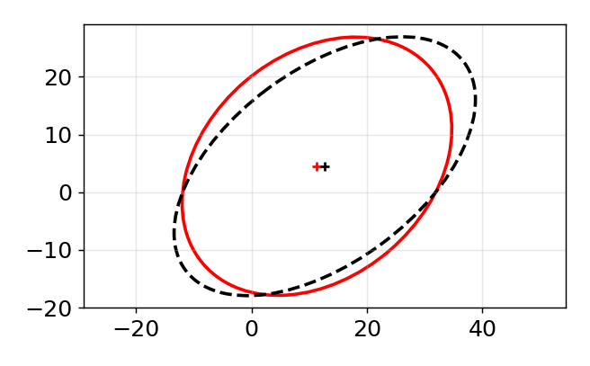
Design the Measurement Function
- residual: Kalman gain 으로 비율을 정해 새 추정을 만드는 데 필요
- 온도계: 전압 출력 센서에서 전압 - 온도 는 의미 없음, 예측 온도를 전압으로 바꾼 뒤 차이 계산
- 측정 공간: 측정은 대부분 역변환 불가, 위치 측정으로 속도를 포함한 상태를 만들 수 없음
- H: 상태를 측정으로 바꾸는 측정 함수, 상태 → 측정 변환은 쉬움
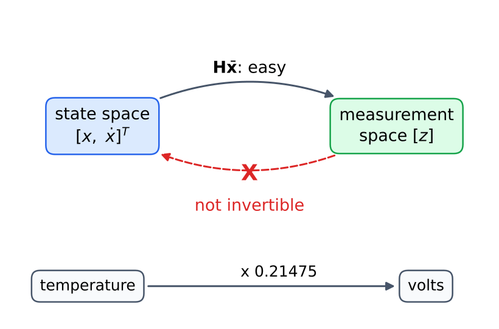
Designing H, z and R
- H: 1x2 행렬, 1x2 와 2x1 의 곱이 1x1 측정, 위치에 1, 속도에 0 을 곱함
- z: 측정 벡터, 센서 하나면 원소 하나, 센서 둘이면 원소 둘
- R: m x m 측정 잡음 공분산, m 은 센서 수, 대각은 각 센서 분산
- 현실: 센서 간 상관 불명확, 잡음이 순수 Gaussian 이 아님, 온도에 따른 bias
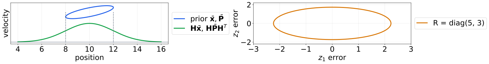
Performing the Update
- Q, B, u 로 예측한 prior(검은 점선)에 측정 z = 1 m 를 반영해 update 식으로 posterior(초록) 계산
- posterior 위치가 측정(빨간 선) 근처 1.085 m 로 이동, 측정하지 않은 속도도 -0.64 m/s 로 변화
- 조건: prior x = [12.7, 4.5], H = [1, 0], R = [5], S = HPH^T + R, K = PH^T S^-1
from scipy.linalg import inv H = np.array([[1., 0.]]) R = np.array([[5.]]) z = 1. plot_covariance_ellipse(x, P, edgecolor='k', ls='dashed') S = np.dot(H, P).dot(H.T) + R K = np.dot(P, H.T).dot(inv(S)) y = z - np.dot(H, x) x = x + np.dot(K, y) P = P - np.dot(K, H).dot(P) plot_covariance_ellipse(x, P, edgecolor='g') plt.axvline(z, color='C3', lw=2) print('x =', x)
x = [ 1.085 -0.64 ]
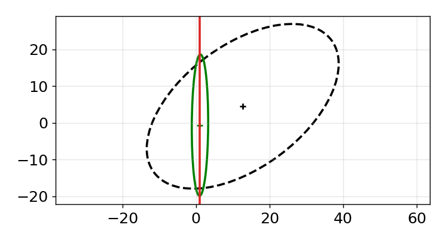
Constant Velocity Filter
- 위치와 속도 상태의 등속 모델 필터를 만드는 함수, x, F, H, R, P, Q 를 개 추적 설계대로 지정
- R, P 는 단위 행렬에 스칼라를 곱해 대각 원소를 한 번에 지정, Q 는 분산으로 이산화
- 조건: x = [0, 0], P = 500, R = 5, Q = 0.1, dt = 0.1 s
def pos_vel_filter(x, P, R, Q=0., dt=1.0): kf = KalmanFilter(dim_x=2, dim_z=1) kf.x = np.array([x[0], x[1]]) # location and velocity kf.F = np.array([[1., dt], [0., 1.]]) # state transition matrix kf.H = np.array([[1., 0]]) # Measurement function kf.R *= R # measurement uncertainty if np.isscalar(P): kf.P *= P # covariance matrix else: kf.P[:] = P # [:] makes deep copy if np.isscalar(Q): kf.Q = Q_discrete_white_noise(dim=2, dt=dt, var=Q) else: kf.Q[:] = Q return kf kf = pos_vel_filter(x=np.array([0., 0.]), P=500, R=5, Q=0.1, dt=.1) print('F =\n', kf.F) print('P =\n', kf.P) print('Q =\n', kf.Q)
F =
[[1. 0.1]
[0. 1. ]]
P =
[[500. 0.]
[ 0. 500.]]
Q =
[[0. 0. ]
[0. 0.001]]
Running the Filter
- 측정마다 predict 와 update 를 호출하고 상태와 공분산을 저장, 대부분은 준비 코드
- 왼쪽: 실제 경로, 측정, 필터 출력과 노란 1 sigma 띠, 오른쪽: 위치와 속도 분산이 빠르게 수렴
- 조건: 측정 50 개, 측정 분산 10, process 분산 0.01, P = diag(500, 49)
def run(x0=(0., 0.), P=500, R=0, Q=0, dt=1.0, track=None, zs=None, count=0, do_plot=True, **kwargs): if zs is None: # simulate dog if no data provided track, zs = compute_dog_data(R, Q, count) kf = pos_vel_filter(x0, R=R, P=P, Q=Q, dt=dt) xs, cov = [], [] for z in zs: kf.predict() kf.update(z) xs.append(kf.x) cov.append(kf.P) xs, cov = np.array(xs), np.array(cov) if do_plot: plots.plot_track(xs[:, 0], track, zs, cov, **kwargs) return xs, cov P = np.diag([500., 49.]) Ms, Ps = run(count=50, R=10, Q=0.01, P=P)
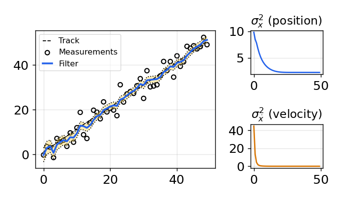
Gaussians over Time
- 25 단계 동안의 상태 Gaussian 을 7 단계마다 하나씩 3 차원 곡면으로 표시, 왼쪽이 첫 단계
- 시간이 지나며 위치 평균이 오른쪽으로 이동하고 분포가 점점 좁고 뾰족해짐
- 조건: P = diag(3, 1), 측정 분산 10, process 분산 0.01, seed 3
P = np.diag([3., 1.]) np.random.seed(3) Ms, Ps = run(count=25, R=10, Q=0.01, P=P, do_plot=False) plots.plot_gaussians(Ms[::7], Ps[::7], (-5, 25), (-5, 5), 75)
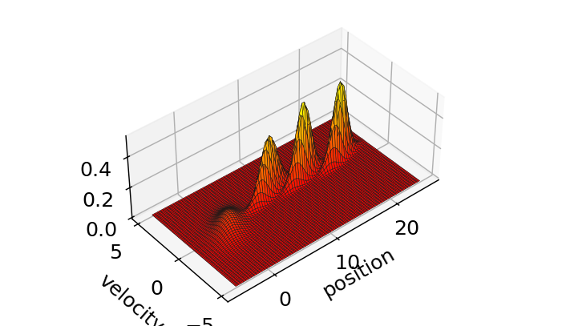
Prediction Equations
Mean
- Fx 는 상태 전이 후 상태, Bu 는 제어 입력의 기여
Covariance
- P, Q 가 대각이면 합도 대각, 위치와 속도의 상관이 사라짐
- 부정확한 속도를 위치에 더하므로 위치의 불확실성 증가
Covariance Prediction
- : 가운데 항을 바깥 항으로 사영하는 형태, 선형대수에서 자주 등장
- FP: 위 삼각 행렬, 뒤의 F^T 까지 곱해야 F 의 행과 열을 모두 반영
- 공분산 생성: 초기 공분산이 0 이어도 process model 이 를 자동 계산
- Fx 와 비교: x 는 벡터라 Fx, P 는 행렬이라 FPF^T 로 시간 전진
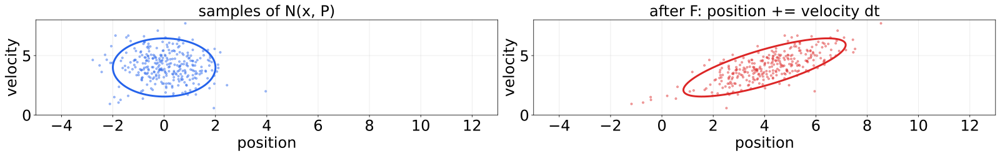
Projecting P Forward
- F 로 0.6 s 씩 5 번 예측하며 매 단계 공분산 타원을 그림, 빨간 실선이 초기 P
- 속도 5 로 위치가 매번 3 씩 이동, 타원 폭이 커지며 위치 정보 손실, 높이는 그대로
- 시간이 갈수록 타원이 더 기울어짐, F 가 x 와 를 선형으로 상관시킨 결과
- 조건: dt = 0.6 s, x = [0, 5], P = diag(1.5, 3), Q = 0
dt = 0.6 x = np.array([0., 5.]) F = np.array([[1., dt], [0, 1.]]) P = np.array([[1.5, 0], [0, 3.]]) plot_covariance_ellipse(x, P, edgecolor='r') for _ in range(5): x = np.dot(F, x) P = np.dot(F, P).dot(F.T) plot_covariance_ellipse(x, P, edgecolor='k', ls='dashed') plots.set_labels(x='position', y='velocity')
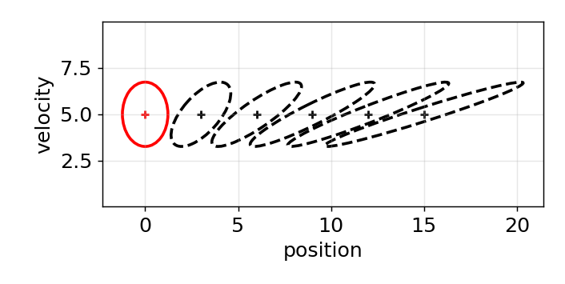
Interactive FPF^T
- F 의 네 원소와 초기 공분산 covar 를 슬라이더로 바꾸며 P(파란)와 FPF^T(빨간) 타원 비교
- 확인: F01 = 0 (상관 없음), F01 = 2 (x = 2Δt + x0), F00 = 2 (x = Δt + 2x0), F00 = 0 (x = Δt)
- 조건: P = [[1, covar], [covar, 2]], 기본값 F = [[1, 1], [0, 1]], covar = 0
from ipywidgets import interact, IntSlider, FloatSlider def plot_FPFT(F00, F01, F10, F11, covar): plt.figure() x = np.array((0, 0.)) P = np.array(((1, covar), (covar, 2))) F = np.array(((F00, F01), (F10, F11))) plot_covariance_ellipse(x, P) plot_covariance_ellipse(x, np.dot(F, P).dot(F.T), ec='r') plt.gca().set_aspect('equal') plt.xlim(-4, 4); plt.ylim(-4, 4) plt.xlabel('position'); plt.ylabel('velocity') interact(plot_FPFT, F00=IntSlider(value=1, min=0, max=2), F01=FloatSlider(value=1, min=0, max=2), F10=FloatSlider(value=0, min=0, max=2), F11=FloatSlider(value=1, min=0, max=2), covar=FloatSlider(value=0, min=0, max=1));
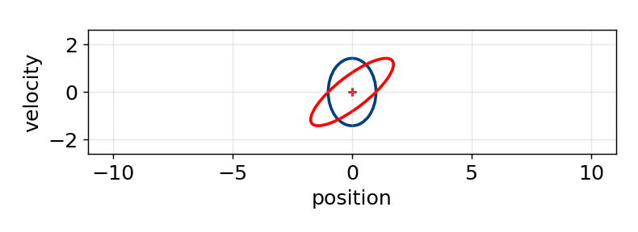
System Uncertainty and Kalman Gain
- 측정 공간: 거리 센서의 거리로는 위치를 알 수 없음, 위치로는 거리 계산 가능, update 는 측정 공간에서 계산
- S: HPH^T 로 공분산을 측정 공간으로 옮기고 센서 잡음 R 을 더함, system uncertainty
- 같은 형태: P 를 F 또는 H 로 다른 공간에 옮긴 뒤 그 공간의 잡음 행렬을 더함
- K: 예측과 측정을 얼마나 신뢰하는지의 비율, 1 차원은 0 ~ 1 실수, 다변량은 벡터
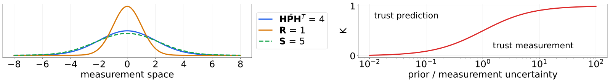
Residual, State and Covariance Update
- Hx: 상태를 같은 의미의 측정으로 변환, z 에서 빼서 residual
- Ky: residual 을 비율만큼 줄이고 K 안의 H^T 로 상태 공간으로 되돌림
- I: 다차원의 1, K 가 크면 P 가 크게 줄고 작으면 덜 줄어듦
- 수치 안정성: 뺄셈으로 대칭성이 깨지고 부동소수점 오차가 누적될 수 있음
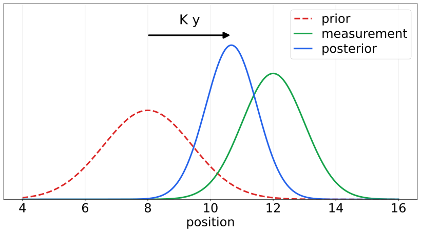
Kalman Filter with NumPy
- 라이브러리 없이 행렬을 변수로 정의하고 predict, update 식을 numpy 로 직접 구현
- 결과는 같은 설계의 필터와 동일, 식을 직접 쓰면 H 를 열 벡터로 쓰는 실수도 쉽게 디버깅
- 조건: 측정 분산 10, process 분산 0.01, x = [10.0, 4.5], P = diag(500, 49), 측정 50 개
from numpy import dot; from scipy.linalg import inv dt, R_var, Q_var = 1., 10, 0.01 x = np.array([[10.0, 4.5]]).T P = np.diag([500, 49]) F = np.array([[1, dt], [0, 1]]) H = np.array([[1., 0.]]) R = np.array([[R_var]]) Q = Q_discrete_white_noise(dim=2, dt=dt, var=Q_var) track, zs = compute_dog_data(R_var, Q_var, count=50) xs, cov = [], [] for z in zs: x = dot(F, x) # predict P = dot(F, P).dot(F.T) + Q S = dot(H, P).dot(H.T) + R # update K = dot(P, H.T).dot(inv(S)) y = z - dot(H, x) x += dot(K, y) P = P - dot(K, H).dot(P) xs.append(x); cov.append(P) plots.plot_track(np.array(xs)[:, 0], track, zs, np.array(cov), plot_P=False)
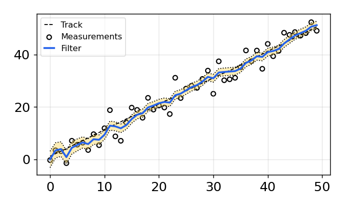
Kalman Filter Equations
| Multivariate | Univariate (Kalman form) | |
|---|---|---|
| Predict | ||
| Update | ||
핵심: x 를 1 차원으로 두면 1 차원 Kalman filter 식, 비슷한 것이 아닌 그 다차원 구현
Notation in the Literature
- a | b: b 를 증거로 한 a, hat 은 추정
- , : posterior, prior
- 대입 표기: x = x + 1 은 등식이 아닌 대입, 첨자를 생략하고 단계별 대입으로 표기
- 기호 차이: F 를 A 로 쓰는 등 문헌마다 다름, 첨자를 지우고 계산 흐름부터 파악
Exercise: Show Effect of Hidden Variables
- 위치만 상태로 둔 1 차원 필터와 위치, 속도를 상태로 둔 2 차원 필터를 같은 측정에 적용
- 빨간 점의 2 차원 필터가 훨씬 정확, 1 차원 필터는 속도를 추정할 수 없어 대상을 뒤따라감
- 조건: x0 = 0, P = 50, R = 5, Q = 0.02, 실제 속도 1, 100 단계
def univariate_filter(x0, P, R, Q): f = KalmanFilter(dim_x=1, dim_z=1, dim_u=1) f.x = np.array([[x0]]) f.P *= P f.H = np.array([[1.]]) f.F = np.array([[1.]]) f.B = np.array([[1.]]) f.Q *= Q f.R *= R return f def plot_1d_2d(xs, xs1d, xs2d): plt.plot(xs1d, label='1D Filter') plt.scatter(range(len(xs2d)), xs2d, c='r', alpha=0.7, label='2D Filter') plt.plot(xs, ls='--', color='k', lw=1, label='track') plt.title('State') plt.legend(loc=4) compare_1D_2D(x0=0, P=50., R=5., Q=.02, vel=1.)
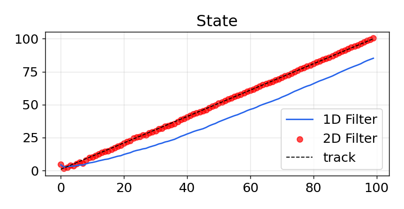
Control Input u
- 1 차원 필터의 predict 에 제어 입력 u 로 이동량을 직접 알려 주고 두 필터 비교
- 두 필터 성능이 비슷, 1 차원 필터가 더 가깝게 따라가기도 함
- 조건: u = 1, 실제 속도 vel = 1, x0 = 0, P = 50, R = 5, Q = 0.02
def compare_1D_2D(x0, P, R, Q, vel, u=None): xs, xs1, xs2 = [], [], [] # storage for filter output f1D = univariate_filter(x0, P, R, Q) f2D = pos_vel_filter(x=(x0, vel), P=P, R=R, Q=0) if np.isscalar(u): u = [u] pos = 0 # true position for i in range(100): pos += vel xs.append(pos) f1D.predict(u=u) # control input u f2D.predict() z = pos + randn()*sqrt(R) # measurement f1D.update(z) f2D.update(z) xs1.append(f1D.x[0]) xs2.append(f2D.x[0]) plot_1d_2d(xs, xs1, xs2) compare_1D_2D(x0=0, P=50., R=5., Q=.02, vel=1., u=1.)
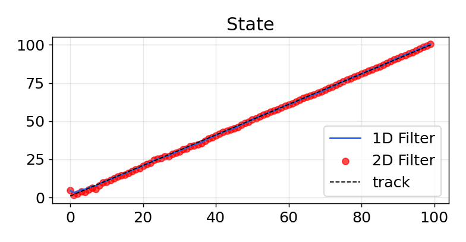
Wrong Control Input
- 실제 속도 -2 인데 제어 입력 u = 1 로 잘못된 이동량을 알려 준 경우
- 1 차원 필터는 잘못된 예측을 따라 크게 벗어나고, 속도를 추정하는 2 차원 필터는 정확
- 제어하는 로봇이면 u 가 정확한 예측을 주지만, 수동 추적에서는 속도를 미리 알기 어려움
- 조건: u = 1, 실제 속도 vel = -2, x0 = 0, P = 50, R = 5, Q = 0.02
compare_1D_2D(x0=0, P=50., R=5., Q=.02, vel=-2., u=1.)
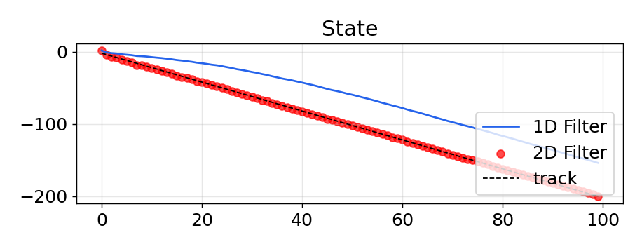
How Velocity is Calculated
핵심: 위치 gain 은 1 차원 Kalman gain 그대로, 속도 gain 은 위치와 속도의 공분산에 비례
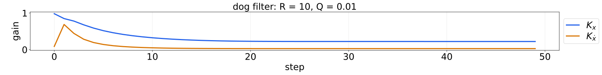
Velocity Update
- y = 0: 예측이 완벽하면 residual 이 0, 속도 추정 유지
- y 큼: 속도 추정이 나쁘면 예측이 빗나가 residual 증가, 만큼 속도 보정
- 공분산: 는 predict 의 FPF^T 가 만든 P 의 비대각 성분, 상관이 클수록 큰 보정
- g-h 필터: 본질적으로 같은 계산, 잡음을 반영한 상수만 다름
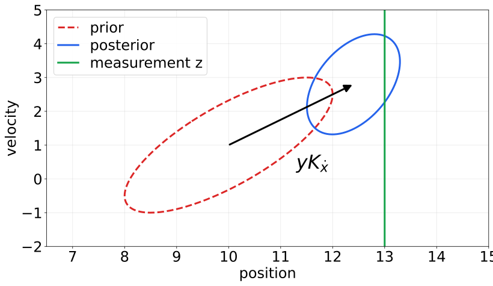
Large Q versus Small Q
- 측정 분산 225 m^2 의 큰 잡음 데이터에서 R 은 고정하고 process 분산 Q 만 바꿔 비교
- 왼쪽 Q = 20 은 예측을 불신해 측정을 바짝 따라감, 오른쪽 Q = 0.02 는 예측을 믿어 직선에 가까움
- 조건: R = 225, P = diag(500, 49), 측정 50 개, seed 2
plt.subplot(121) run(track=trk, zs=zs, R=225, Q=20, P=P, plot_P=False, title='R = 225, Q = 20'); plt.subplot(122) run(track=trk, zs=zs, R=225, Q=.02, P=P, plot_P=False, title='R = 225, Q = 0.02');
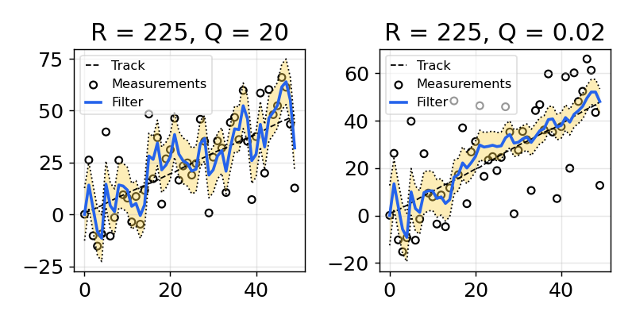
Large R and Bad Initial Position
- 실제 225 m^2 인 측정 잡음을 10,000 m^2 로 크게 설정, 측정보다 예측을 선호하는 필터
- 왼쪽은 매끄럽고 좋아 보이지만 P 가 수렴하지 않음, 오른쪽처럼 초기 위치가 50 m 로 틀리면 끝내 추적 실패
- 조건: R = 10,000, Q = 0.2, 오른쪽 x0 = [50, 1]
plt.subplot(121) run(track=trk, zs=zs, R=10000, Q=.2, P=P, plot_P=False, title='R = 10,000, Q = 0.2'); plt.subplot(122) run(track=trk, zs=zs, R=10000, Q=.2, P=P, plot_P=False, x0=np.array([50., 1.]), title='x0 = [50, 1]');
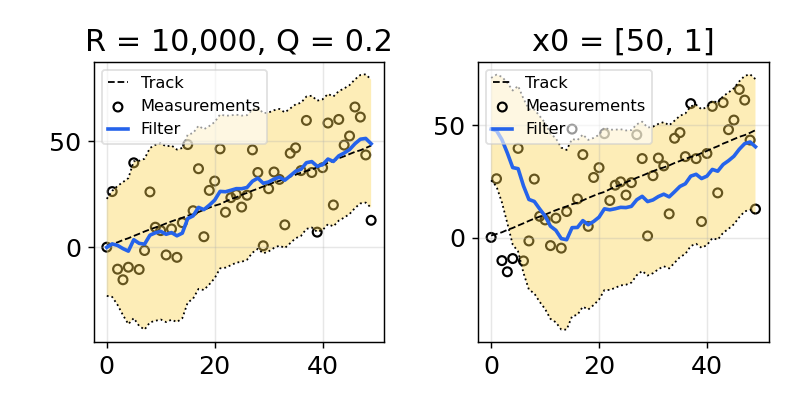
Correct R with Bad Initial Position
- R 을 올바른 225 m^2 로 되돌리고 초기 위치는 20 m 로 틀리게 둔 경우
- 처음 몇 단계는 추적에 애를 먹지만 이후 정확히 추적, R 이 최적이라 거의 최적의 결과
- Q 의 경험칙: 샘플 간 가속도 최대 변화량 Δa 의 1/2 ~ 1 배 (가속도가 일정하고 상관 없다는 가정)
- 조건: R = 225, Q = 0.2, x0 = [20, 1]
run(track=trk, zs=zs, R=225, Q=.2, P=P, plot_P=False, x0=np.array([20., 1.]), title='R = 225, Q = 0.2');
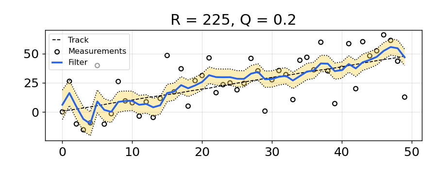
Large Initial P
- 초기 P = 500 I 는 위치 표준편차 약 22.36 m, prior 가 최대 67 m 까지 틀릴 수 있다는 뜻
- 초반 측정이 튀면 자신의 추정을 불신해 측정 쪽으로 크게 점프, 이후 P 가 현실적인 값으로 빠르게 수렴
- K 는 예측과 측정 불확실성의 비율, P 가 R 보다 크면 추정 대부분을 측정에서 가져옴
- 조건: 측정 분산 27.5, Q = 0.02, P = 500 I, 측정 50 개
run(track=trk, zs=zs, R=var, Q=.02, P=500., plot_P=True, title='P = 500 m$^2$');
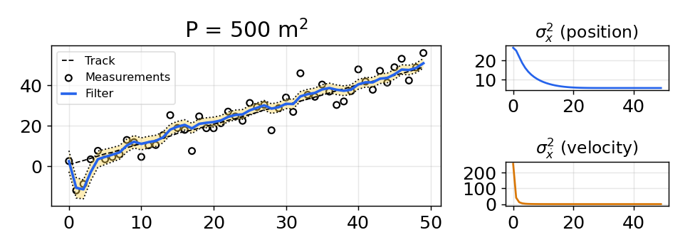
Small Initial P
- 같은 데이터에 초기 P = 1 I 로 설정, 처음부터 측정을 따라가고 정착 시간이 없어 보임
- 그러나 오른쪽 위치 분산 그래프에 초기 급등이 있고 끝까지 잘 수렴하지 않음, 긴 수렴과 차선의 결과
- P 는 데이터에 대한 실제 지식을 반영해야 함, 생물 추적은 불확실, 온도계는 첫 측정도 확실
- 조건: 측정 분산 27.5, Q = 0.02, P = 1 I, 측정 50 개
run(track=trk, zs=zs, R=var, Q=.02, P=1., plot_P=True, title='P = 1 m$^2$');
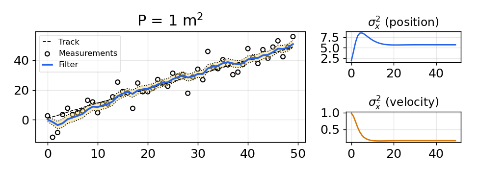
Bad Initial Estimate
- 실제 시작은 0 m 인데 초기 위치를 100 m 로 잘못 두고 P 를 1 과 500 으로 비교
- 왼쪽 P = 1 은 3 sigma 오차 3 m 라고 믿어 수렴이 매우 느림, 오른쪽 P = 500 은 5 ~ 6 단계 만에 좋은 출력
- 조건: x0 = [100, 0], 측정 분산 27.5, Q = 0.02
x = np.array([100., 0.]) plt.subplot(121) run(track=trk, zs=zs, R=var, Q=.02, P=1., x0=x, plot_P=False, title='P = 1 m$^2$'); plt.subplot(122) run(track=trk, zs=zs, R=var, Q=.02, P=500., x0=x, plot_P=False, title='P = 500 m$^2$');
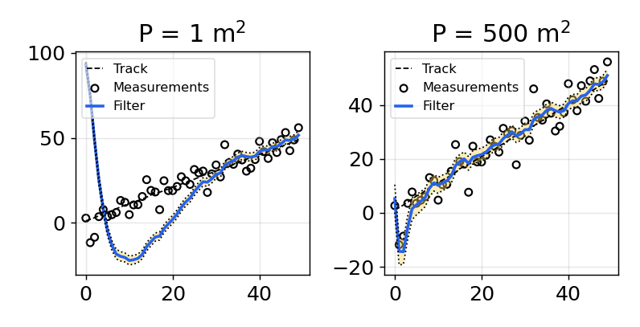
Covariance Ellipses
- 매 단계 공분산을 (단계, 위치) 위치에 2 sigma 타원으로 그림, x 축은 위치, y 축은 속도 불확실성
- 타원이 빠르게 진행 방향으로 기울어진 길고 좁은 모양으로 정착, R 이 작으면 타원 전체가 작음
- 조건: 초기 P = 20 I, Q = 0.02, 20 단계, 왼쪽 R = 5, 오른쪽 R = 0.5, 오른쪽 아래 숫자는 마지막 분산
def plot_covariances(count, R, Q=0, P=20., title=''): track, zs = compute_dog_data(R, Q, count) f = pos_vel_filter(x=(0., 0.), R=R, Q=Q, P=P) xs, cov = [], [] for z in zs: f.predict() f.update(z) xs.append(f.x[0]) cov.append(f.P) plots.plot_track_ellipses(count, zs, xs, cov, title) plt.subplot(121) plot_covariances(R=5, Q=.02, count=20, title='R = 5 m$^2$') plt.subplot(122) plot_covariances(R=.5, Q=.02, count=20, title='R = 0.5 m$^2$')
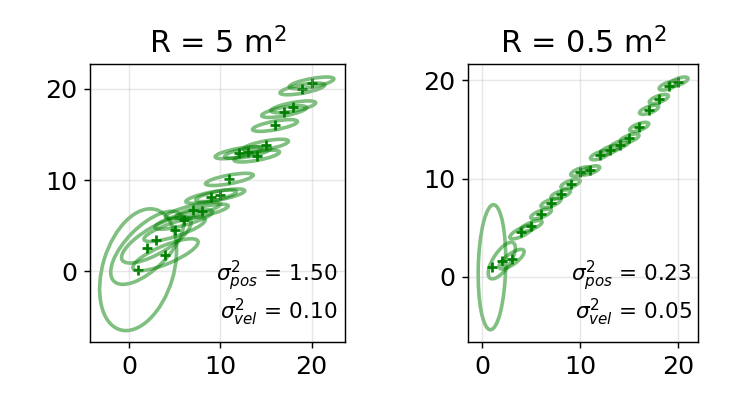
Question: Explain Ellipse Differences
- 질문: R = 5 m^2 의 타원이 R = 0.5 m^2 보다 수평 쪽으로 더 기울어진 이유
- 타원 해석: 수직에 가까우면 위치와 속도의 상관 없음, 대각선이면 강한 상관
- R 이 클 때: K 가 예측을 선호, 예측은 속도 상태에서 오므로 x 와 의 상관이 큼
- R 이 작을 때: K 가 측정을 선호, 예측을 거의 쓰지 않아 보고되는 상관이 작음
핵심: 필터가 보고하는 상관은 물리 세계가 아닌 모델의 상관, 측정과 예측의 반영 비율
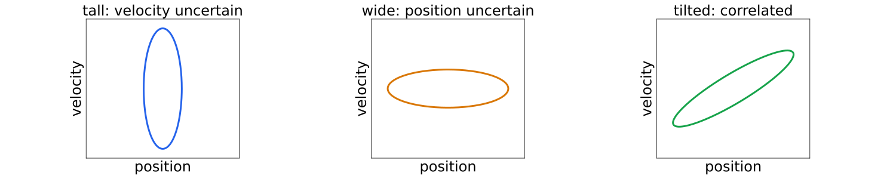
Very Large Measurement Error
- 측정 오차를 R = 200 m^2 로 매우 크게 두고 공분산 타원을 다시 그림
- 타원이 빠르게 넓고 낮아짐, 필터가 주로 예측을 사용, 측정을 매우 불신해 추정 갱신이 느림
- 조건: R = 200, Q = 0.2, 5 단계, 초기 P = 20 I
plot_covariances(R=200., Q=.2, count=5, title='R = 200 m$^2$')
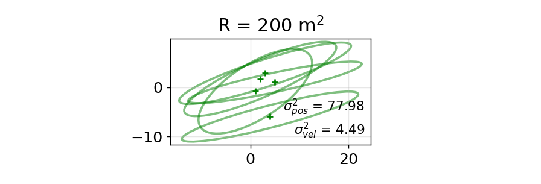
주의: 공분산 타원은 ax.set_aspect('equal') 또는 plt.axis('equal') 로 그려야 왜곡 없음
Filter Initialization
- 방식: 첫 측정 z0 를 받을 때까지 초기화하지 않고 x0 = z0
- 크기가 다르면: H 가 정사각이 아니면 Moore-Penrose 유사역행렬 pinv
- 속도: 처음 두 측정의 차이를 초기 속도로 사용 가능
- P: 위치 분산은 측정 오차 R, 속도 분산은 최대 속도의 제곱
- 경마 예: 말은 반드시 출발 게이트에서 출발, 나쁜 첫 측정보다 게이트 위치로 초기화
핵심: 첫 측정으로 상태를, 측정 오차와 최대값으로 P 를 초기화하는 방식이 대부분 잘 동작
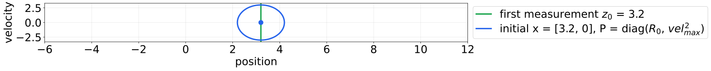
Initial State from the First Measurement
- 위치만 측정하는 H 의 유사역행렬로 첫 측정 3.2 m 를 상태 벡터로 변환
- 위치는 3.2, 측정으로 알 수 없는 속도는 0 으로 채워짐
- 조건: H = [1, 0], z0 = 3.2 m
from scipy.linalg import pinv H = np.array([[1, 0.]]) z0 = 3.2 x = np.dot(pinv(H), z0) print(x)
[[3.2]
[0. ]]
Batch Processing
- 이미 수집한 측정 전체를 한 번에 필터링, 내부는 측정마다 predict, update 를 반복하는 루프
- 상태, 공분산과 각각의 prior 를 배열로 모아 반환, 재귀 필터와 같은 결과를 간단한 코드로 얻음
- 조건: 측정 분산 10, process 분산 0.2, 필터 R = 3, Q = 0.02, P = diag(500, 49), 측정 50 개
count = 50 track, zs = compute_dog_data(10, .2, count) P = np.diag([500., 49.]) f = pos_vel_filter(x=(0., 0.), R=3., Q=.02, P=P) xs, _, _, _ = f.batch_filter(zs) plots.plot_measurements(range(1, count + 1), zs) plots.plot_filter(range(1, count + 1), xs[:, 0]) plt.legend(loc='best');
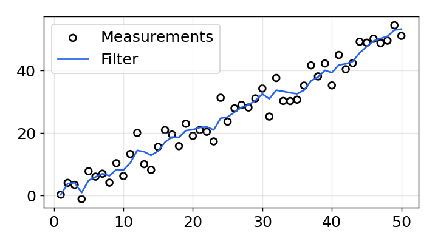
Residual Check
- batch 결과의 prior 로 residual y = z - Hx 를 계산해 200 단계 동안 그래프로 확인
- residual 이 0 주위의 잡음처럼 보이면 설계가 적절, 0 에서 벗어나거나 잡음처럼 보이지 않으면 설계 문제
- 조건: 측정 분산 10, process 분산 0.2, 필터 R = 3, Q = 0.02, 측정 200 개
track, zs = compute_dog_data(10, .2, 200) P = np.diag([500., 49.]) f = pos_vel_filter(x=(0., 0.), R=3., Q=.02, P=P) xs, _, priors, _ = f.batch_filter(zs) y = zs - priors[:, 0] # residual z - Hx plt.plot(y);
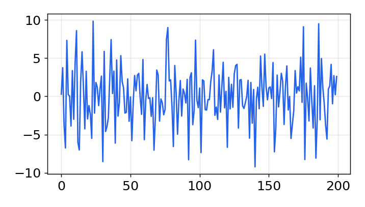
Smoothing the Results
- 상황: 직선 주행 중인 차량, 한 측정이 좌회전 시작을 암시
- 필터: 잡음인지 실제 회전 시작인지 판단 불가, 추정을 측정 쪽으로 일부만 이동
- 미래 측정: 이후 측정도 좌회전이면 회전 확정, 직선이면 잡음으로 무시
- RTS smoother: Rauch, Tung, Striebel 의 알고리즘, batch 결과의 평균과 공분산을 입력
핵심: 미래 측정까지 사용해 측정을 완전히 반영하거나 무시, 출력이 더 매끄럽고 정확
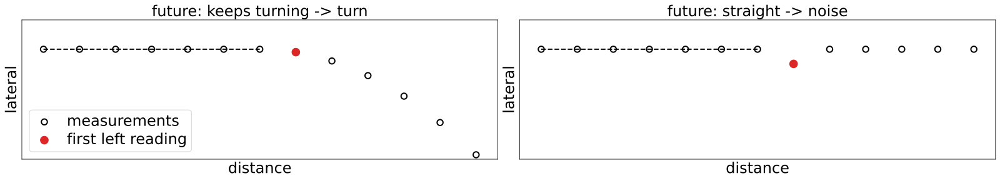
RTS Position
- batch 로 구한 상태와 공분산을 RTS smoother 에 넣어 smoothing 한 위치와 필터 위치 비교
- RTS 출력(실선)이 Kalman filter 출력(점선)보다 훨씬 매끄럽고 거의 항상 더 정확
- 조건: 측정 분산 3, process 분산 0.02, R = 3, Q = 0.02, P = diag(500, 49), 측정 50 개, seed 8923
seed(8923) count = 50 P = np.diag([500., 49.]) f = pos_vel_filter(x=(0., 0.), R=3., Q=.02, P=P) track, zs = compute_dog_data(3., .02, count) Xs, Covs, _, _ = f.batch_filter(zs) Ms, Ps, _, _ = f.rts_smoother(Xs, Covs) plots.plot_measurements(zs) plt.plot(Xs[:, 0], ls='--', label='Kalman Position') plt.plot(Ms[:, 0], label='RTS Position') plt.legend(loc=4);
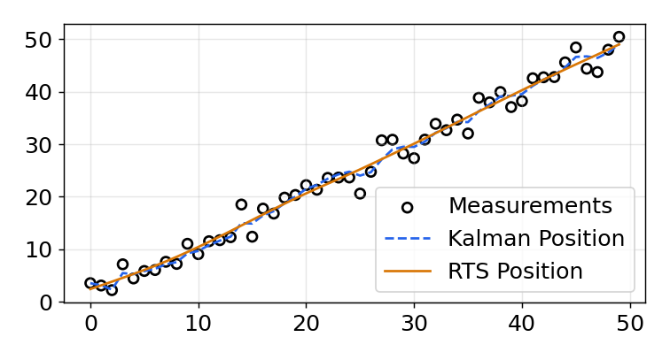
RTS Velocity
- 같은 결과에서 hidden variable 인 속도를 Kalman filter 와 RTS smoother 로 비교
- 속도의 개선이 위치보다 더 극적, RTS 속도가 실제 속도 1 (검은 선) 에 가깝게 유지
- 조건: 위 슬라이드와 같은 데이터와 필터, 실제 속도 약 1 m/s
plt.plot(Xs[:, 1], ls='--', label='Kalman Velocity') plt.plot(Ms[:, 1], label='RTS Velocity') plt.legend(loc=4) plt.gca().axhline(1, lw=1, c='k');
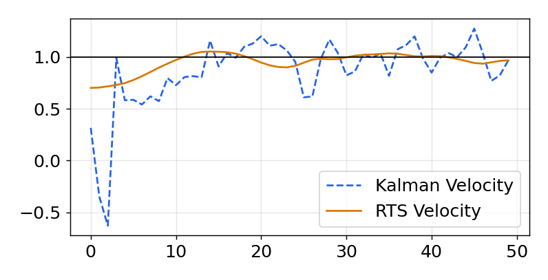
Exercise: Compare Velocities
- 연속한 측정의 차이로 구한 raw 속도를 Kalman filter, RTS 속도와 함께 그림
- 잡음이 신호를 덮어 raw 속도는 쓸모가 없음, 필터는 다차원 K (예: [0.1274, 0.843]^T) 로 속도를 따로 추정
- 측정이 정확해도 속도, 가속도를 정확히 얻기 위해 Kalman filter 사용
- 조건: 위 슬라이드의 측정 zs, 필터 Xs, RTS 결과 Ms
dx = np.diff(zs, axis=0) plt.scatter(range(1, len(dx) + 1), dx, facecolor='none', edgecolor='k', lw=2, label='Raw velocity') plt.plot(Xs[:, 1], ls='--', label='Filter') plt.plot(Ms[:, 1], label='RTS') plt.legend(loc=4);
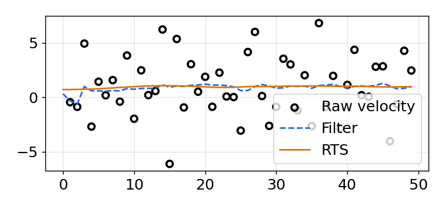
Hidden Variables
- hidden variable: 관측 변수와 상관되어 있어 필터 정확도를 크게 향상
- observability: 시스템 출력을 관측해 상태를 결정할 수 있는지의 문제, 복잡하면 엄밀한 분석 필요
- 주의: 위치로 차량 색을 추정하는 필터도 만들 수 있지만 무의미, 추정한 속도는 반드시 검증
- Nyquist: 속도가 주기 성분을 가지면 표본 주기가 충분히 짧아야 함, 주기가 같으면 속도가 일정하다고 보고
- 초기화: 나쁜 초기값에서 관측 변수는 회복해도 hidden variable 은 실패할 수 있음
- 설계 단계: 상태 추정, 모델 작성, 시험, 수정을 반복하는 과정, 처방이 아닌 안내
핵심: hidden variable 추정은 강력하지만 위험한 도구, 결과를 반드시 검증
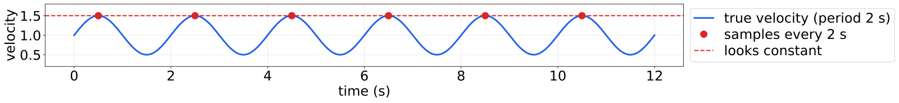
Designing R and Q
- R: 센서는 Gaussian 이 아님, 0.5 kg 물체를 표준편차 1 kg 저울로 재도 음수는 보고하지 않음
- 분포: 실제 센서는 두꺼운 꼬리(kurtosis)와 비대칭(skew), 꼬리가 잘리기도 함
- Q: 개의 다음 움직임, 언덕, 바람, 운전 습관을 하나의 정확한 수치로 표현해야 함
- smug filter: 알려준 잡음 값만 믿어 P 는 줄어드는데 실제 정확도는 나빠짐, 최악은 발산
- 최적성: 선형, Gaussian 가정이 맞으면 최소제곱 의미의 최적, 실제로는 거의 성립하지 않음
- 설계 과정: 수학으로 초기값, 실험으로 조정, 잡음이 많으면 Q 증가, 너무 크면 반응 지연
결론: Kalman filter 는 세계의 수학적 모델, 출력은 그 모델의 정확도만큼
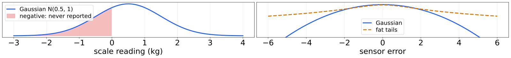